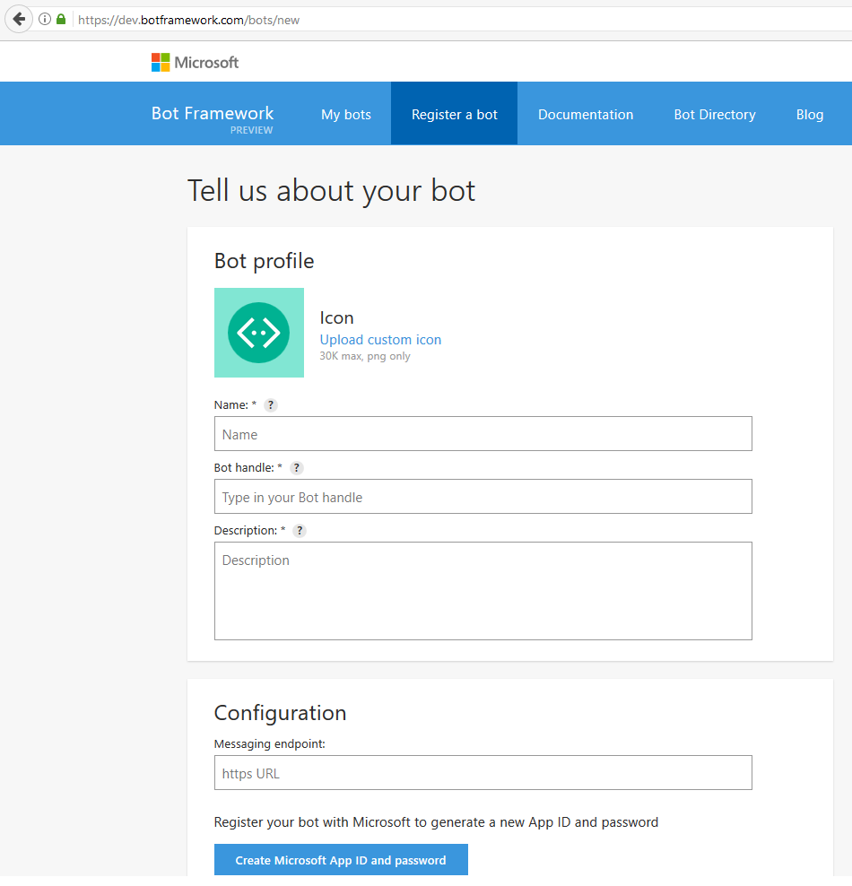
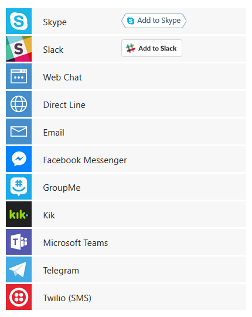
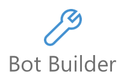
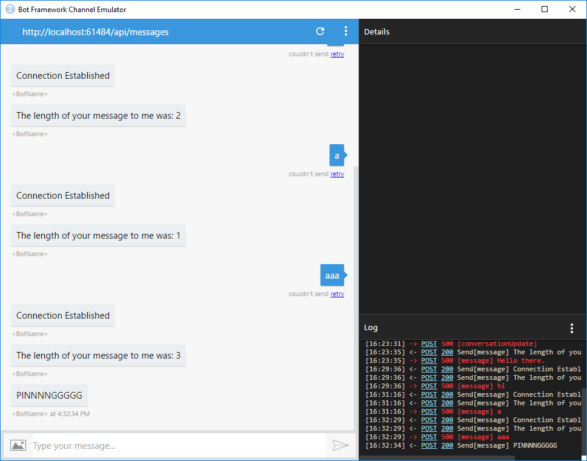
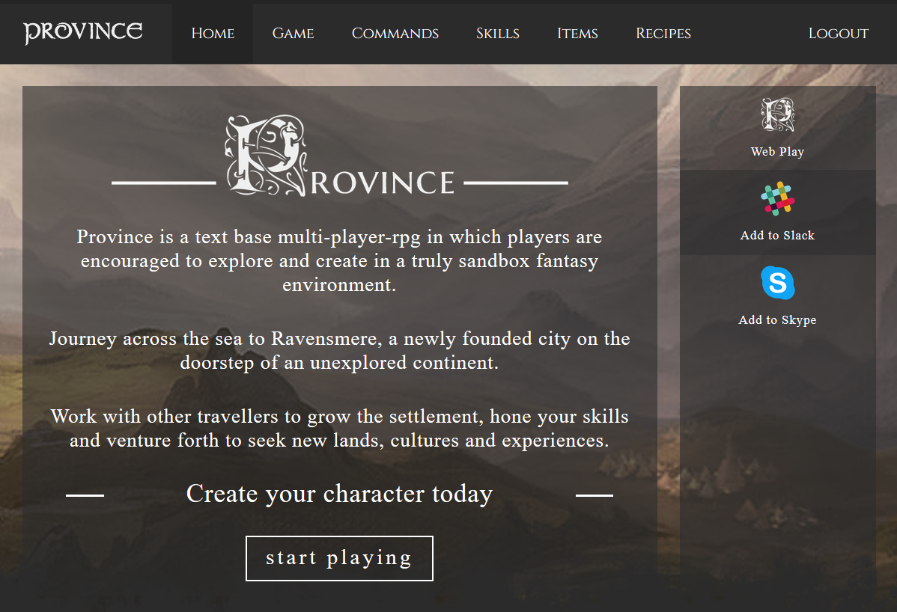

Created by Paul Hutson / @paulhutson
- Bots, what are they?
- The Microsoft Approach
- Building an Example bot
- SlackMud - an example service
Microsoft Facebook Many Other Companies
Bots in tons of tools - Discord, Facebook, etc



Open source SDK on Github for Node.js, .NET and REST
Simple build in prompts and command dialogs to simple to use "FormFlow" dialogs
Support for rich attachments (Images, cards, videos, docs, etc) and calling within Skype.
Online/Offline chat emulator
Links into the Cognitive Services for language understanding.
Using the Microsoft Bot Framework

https://docs.botframework.com/en-us/tools/bot-framework-emulator/

Paul Hutson / Twitter: @paulhutson